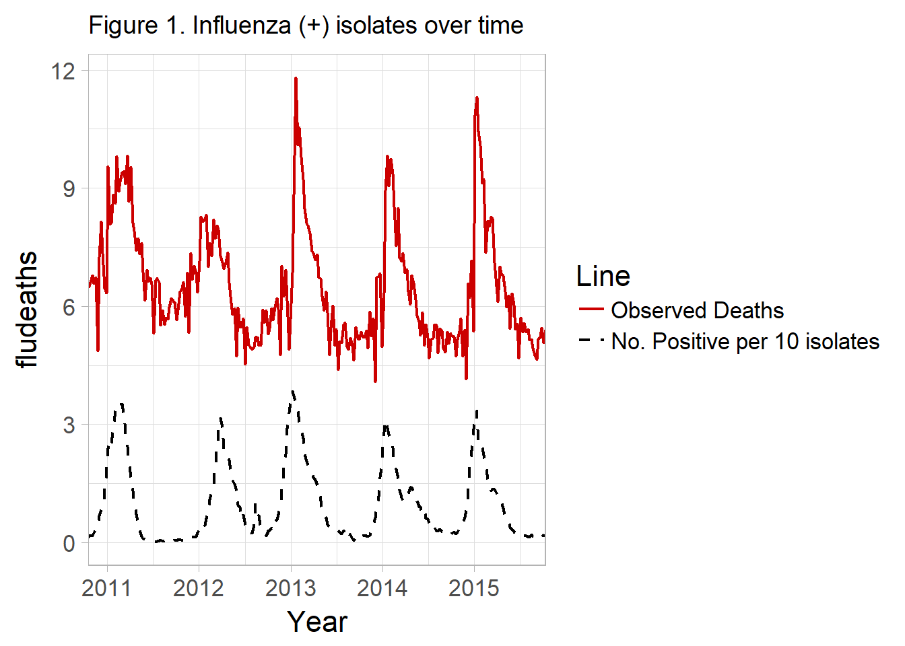

flu_ex <- flumodelr::flu_exIn current methods, most researchers incorporate data on the percent of isolates positive with influenza viral types. This is publically available in many cases see ?nrevss. The data describes the proportion of isolates tested, which may be obtained from participating hospital and outpatient settings. Using this surrogate time-periods of high flu activity can be used to inform spikes in influenza activity, increasing confidence that deaths are influenza related and estimated influenza morbidity and mortality.

In light of this the above model can be modified like so:
\[Eq \ 3. \ y = \alpha_0 + \beta_1*t + \beta_2*Flu_t + sine(\frac{2 \pi t}{52}) + cos(\frac{2 \pi t}{52}) + u\] Where Flu = no. of isolates positive for influenza / total isolates tested in a given timepoint t.
Many published examples of this exist. Some authors include data on the % RSV (+), as well as breakdown influenza by subtype and even include data on weather, humidity etc.
See [@Wang2012, @Matias2016]